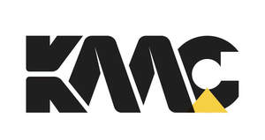

Trade Mark Journal No.2026/003 16 January 2026
UK00004315641 24 December 2025 (7)

- Class 7
- Machines, machine tools and industrial robots for processing and shaping wood, metals, glass, plastics and minerals, 3D printers; construction machines and robotic mechanisms (machines) for use in construction; bulldozers; diggers (machines); excavators; road construction and road paving machines; drilling machines; rock drilling machines; road sweeping machines; lifting, loading and transmission machines and robotic mechanisms (machines) for lifting, loading and transmission purposes; elevators, escalators and cranes; machines and robotic mechanisms (machines) for use in agriculture and animal breeding; machines and robotic mechanisms (machines) for processing cereals, fruits, vegetables and food; beverage preparation machines, electromechanical; beverage processing machines; engines and motors, other than for land vehicles, parts and fittings therefor; hydraulic and pneumatic controls for engines and motors; brakes, other than for vehicles; brake linings for engines; crankshafts; transmission gears for machines; cylinders for engines; pistons for engines; turbines, not for land vehicles; filters for engines and motors; oil, air and fuel filters for land vehicle engines; exhausts for land vehicle engines; exhaust manifolds for land vehicle engines; engine cylinders for land vehicles; engine cylinder heads for land vehicles; pistons for land vehicle engines; carburetors for land vehicles; fuel conversion apparatus for land vehicle engines; injectors for land vehicle engines; fuel economisers for land vehicle engines; pumps for land vehicle engines; valves for land vehicle engines; starters for motors and engines; dynamos for land vehicle engines; sparking plugs for land vehicle engines; bearings (parts of machines); roller or ball bearings; machines for mounting and detaching tires; alternators; current generators; electric generators; current generators operated with solar energy; painting machines; automatic spray guns for paint, electric; hydraulic and pneumatic punching machines and guns; electric adhesive tape dispensers (machines); electric guns for compressed gas or liquid spraying machines; electric hand drills; electric hand saws; electric jigsaw machines; spiral mixing machines; spiral conveyors [machines]; spiral binding machines for industrial use; grinding machines with spiral bevel gears; compressed air machines, compressors (machines); vehicle washing installations, compressed gas or liquid spraying industrial robot machines; drilling and sawing industrial robot machines; compressed air dispenser industrial robot machines; vehicle washing robotic installations; electric and gas-operated welding apparatus; electric arc welding apparatus; electric soldering apparatus; electric arc cutting apparatus; electrodes for welding machines; electric and gas operated industrial welding robot machines; Electric arc welding industrial robot machines; Electric soldering industrial robot machines; Electric arc cutting industrial robot machines; printing machines; packaging machines; filling, plugging and sealing machines; labellers (machines); sorting machines; packaging industrial robot machines; filling, plugging and sealing industrial robot machines; industrial robotic labeller machines; industrial robotic sorting machines; electric packing machines for plugging and sealing of plastics; machines for textile processing; sewing machines; textile processing industrial robotic machines; Sewing industrial robotic machines; pumps [machines]; self-regulating fuel pumps; electric kitchen machines for chopping, grinding, crushing, mixing and mincing foodstuff; washing machines; laundry washing machines; dishwashers; spin driers (not heated); electric cleaning machines for cleaning floors, carpets or floorings, vacuum cleaners and parts thereof; automatic vending machines; galvanizing and electroplating machines; electric door openers and closers; joints (parts of engines); motors and engines (except for land vehicles); machine coupling and transmission components, except for land vehicles, and parts therefor; lifting apparatus; cranes [lifting and hoisting apparatus]; machines for hoisting; gantry cranes; overhead travelling cranes; jib cranes; crane hooks; buffers being power tools; lubrication machines; anti-swinging brakes for crane forks.
KM KÜMSAN VİNÇ SİSTEMLERİ SANAYİ VE TİCARET ANONİM ŞİRKETİ
Representative: SMYRNA LTD